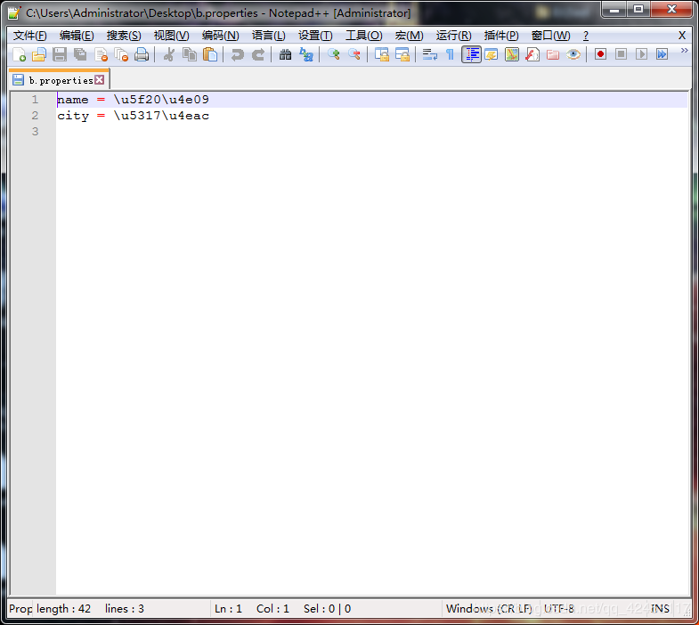

前几天围绕着JDBC编程进行了系统的学习。现在我们对Java程序数据库操作已经是轻车熟路了。也学会了使用各种框架来帮助我们简化编程。
今天是学习计划的第七天，虽然学习热情没有前几天高涨了。但是，写博客总结的习惯应该要坚持下去。废话不多说了。
今天的学习内容是JavaWeb开发——软件国际化。
软件的国际化：软件开发时，要使它能同时应对世界不同地区和国家的访问，并针对不同地区和国家的访问，提供相应的、符合来访者阅读习惯的页面或数据。
国际化又称为 i18n：internationalization。
通俗一点就是说，一套软件提供多套不同的界面，根据来访者的国家和语言的不同，从而显示对应的界面。
其实JDK就实现了软件国际化，在dos窗口输入javac命令，dos窗口就会弹出中文信息。而当你改变你电脑的语言为英文，再次到dos窗口输入javac命令，dos窗口弹出的就是英文信息了。
软件实现国际化，需具备哪些特征：
我们先看第一个特征
贴上一张语言和国家代码
| 语言代码 | 说明 | | | 国家代码 | 说明 |
| De | German | | | CN | China |
| es | Spanish | | | CA | Canada |
| En | English | 分 | DE | Germany |
| Fr | French | 割 | FR | France |
| Ja | Japanese | 线 | IN | India |
| Jw | Javanese | | | US | United State |
| ko | Korean | | | ||
| Zh | Chinese | | |
资源包的文件一般建立在src目录下。
演示一下。
新建web项目，名为day07。
在src目录下新建三个配置文件，分别为myproperties.properties、myproperties_zh_CN.properties、myproperties_en_US.properties。
在myproperties.properties文件下编写name = default
在myproperties_zh_CN.properties文件下编写name = 张三
在myproperties_en_US.properties文件下编写name = mary
有些同学会发现编写 name = 张三 的配置文件无法保存，因为配置文件是不能保存中文的。顺便科普一下资源文件的书写格式。
所以如果想在配置文件中保存中文，就得先把中文转成Unicode，那如何转换呢？
我们可以先打开一个dos窗口，然后在窗口中输入native2ascii，回车后dos窗口会等待用户输入，此时你可以输入要转换的中文信息，比如输入张三，窗口就会显示出对应的Unicode编码。
现在将几个中文汉字进行Unicode编码我们已经能够实现了，但是如果有大量的中文数据需要批量转换应该怎么办呢？
在桌面上创建一个a.properties文件，然后输入
name = 张三
city = 北京
我们的目的是将该文件的所有内容转成Unicode编码。
打开dos窗口，将路径切换到你的文件目录，也就是切换到桌面目录，然后输入
native2ascii a.properties b.properties第一个文件为要转码的文件，第二个文件为生成的Unicode编码文件。

回到桌面，发现多了一个b.properties文件，打开一看，两个中文信息已经被转换成了Unicode编码了。
用这个小工具就能够轻松实现中文转Unicode编码问题。
好像有点偏离主题了。哈哈，请原谅我这颗爱分享的心。
咳咳，继续今天的内容哈。
有了配置文件之后，我们就应该读取文件了。
新建测试类，编写测试代码
@Test
public void demo1(){
//使用ResourceBundle读取配置文件，不设置国家
ResourceBundle bundle = ResourceBundle.getBundle("myproperties");
//默认根据系统语言选择配置文件
System.out.println(bundle.getString("name"));
}运行代码
说明运行的是中文信息的配置文件。
在Java中存在这样一个类，Locale类，它代表了国家和语言。它有什么作用呢？
通过案例感受一下。
编写测试代码
@Test
public void demo2(){
//读取文件时，设置国家
Locale locale = new Locale("en","US");//指定国家为美国
ResourceBundle bundle = ResourceBundle.getBundle("myproperties",locale);
System.out.println(bundle.getString("name"));
}运行代码
说明运行的是英文信息的配置文件。Locale类的作用应该一目了然吧。
这里有一个优先级的问题，就是设置Locale类的优先级是最高的，你设置的是哪个国家和语言，运行的就是哪个语言的配置文件，其次是系统国家设置，最后是默认的。
基础知识就介绍完毕了，接下来我们来编写一个登录案例加深一下理解。
新建login.jsp文件
<%@page import="java.util.ResourceBundle"%>
<%@ page language="java" contentType="text/html; charset=UTF-8"
pageEncoding="UTF-8"%>
<html>
<head>
<title>Insert title here</title>
</head>
<body>
<%
ResourceBundle bundle = ResourceBundle.getBundle("myproperties");
%>
<h1><%=bundle.getString("forminfo") %></h1>
<form>
<%=bundle.getString("username") %><input type="text" name="username" /><br />
<%=bundle.getString("password") %><input type="password" name="password" /><br />
<input type="submit" value="<%=bundle.getString("submit") %>" />
</form>
</body>
</html>现在，对jsp的文本元素进行国际化。
分别修改配置文件，首先修改myproperties.properties文件
forminfo = default Login Form
username = default Username
password = default Password
submit = default Submit然后修改myproperties_en_US.properties文件
forminfo = Login Form
username = Username
password = Password
submit = Submit最后修改myproperties_zh_CN.properties文件
forminfo = \u767B\u5F55\u8868\u5355
username = \u7528\u6237\u540D
password = \u5BC6\u7801
submit = \u63D0\u4EA4将项目部署运行
因为我们没有指定国家，所以应该以系统默认为准，显示的是中文信息。
现在我们手动指定一下国家。
将login.jsp文件修改一下
ResourceBundle bundle = ResourceBundle.getBundle("myproperties",Locale.US);只需要将创建ResourceBundle对象的代码作如上修改即可，在Locale类中定义了各种与国家对应的常量，所以我们直接可以在构建ResourceBundle对象时将Locale类的字段传入即可。
现在重新运行一下程序。
上面已经说过了，Locale类设置的国家优先级是最高的，所以显示了英文信息。
上面的代码大量使用使用了<%=%>，不仅麻烦，而且不美观，我们可以使用JSTL去显示数据。
修改login.jsp文件
<%@page import="java.util.Locale"%>
<%@page import="java.util.ResourceBundle"%>
<%@ page language="java" contentType="text/html; charset=UTF-8"
pageEncoding="UTF-8"%>
<%--引入国际化标签库--%>
<%@taglib uri="http://java.sun.com/jsp/jstl/fmt" prefix="fmt" %>
<html>
<head>
<title>Insert title here</title>
</head>
<body>
<%
ResourceBundle bundle = ResourceBundle.getBundle("myproperties",Locale.US);
%>
<h1><%=bundle.getString("forminfo") %></h1>
<form>
<%=bundle.getString("username") %><input type="text" name="username" /><br />
<%=bundle.getString("password") %><input type="password" name="password" /><br />
<input type="submit" value="<%=bundle.getString("submit") %>" />
</form>
<hr/>
<fmt:setLocale value="zh_CN"/>
<fmt:setBundle basename="myproperties" var="bundle" scope="page"/>
<h1><fmt:message key="forminfo" bundle="${bundle }"/></h1>
<form>
<fmt:message key="username" bundle="${bundle }"/><input type="text" name="username" /><br />
<fmt:message key="password" bundle="${bundle }"/><input type="password" name="password" /><br />
<input type="submit" value="<fmt:message key="submit" bundle="${bundle }"/>" />
</form>
</body>
</html>运行项目
同样成功实现了效果，但是代码看起来就会比第一种实现方式简洁、舒服。
因为篇幅有限，软件国际化的内容在一篇博客中讲完是不太现实的，这一部分的内容我就大概分三个部分去讲解，所以这是一个系列，就分为
这三个部分吧。大家阅读的时候可以按从上往下的顺序阅读。